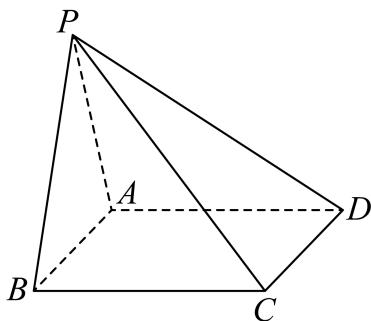
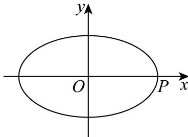

填空题
按本区原卷题号顺序排列。
宝山 · 第1题 ★☆☆☆☆ · 教师预估
…
集合 A=(−1,1),B=Z, ，则A ∩ B =
考点：区间与整数集合求交。
难度依据：涉及区间与整数集合求交；难度为教师预估，需结合原题条件复核。
核查说明：依据现有底稿归类，尚未逐页校卷、公式校净或独立数学终审。
展开答案与解析
宝山 · 第2题 ★☆☆☆☆ · 教师预估
…
函数 ⋅y=cos2x+1 的最小正周期为
考点：余弦函数最小正周期。
难度依据：涉及余弦函数最小正周期；难度为教师预估，需结合原题条件复核。
核查说明：依据现有底稿归类，尚未逐页校卷、公式校净或独立数学终审。
展开答案与解析
宝山 · 第3题 ★☆☆☆☆ · 教师预估
…
设i为虚数单位，若(a − 2) + (2a − 1)i为纯虚数，则实数a = .
考点：纯虚数实部为零与虚部非零。
难度依据：涉及纯虚数实部为零与虚部非零；难度为教师预估，需结合原题条件复核。
核查说明：依据现有底稿归类，尚未逐页校卷、公式校净或独立数学终审。
展开答案与解析
宝山 · 第4题 ★☆☆☆☆ · 教师预估
…
在(x+2)5的展开式中x3的系数为
考点：二项展开通项与系数。
难度依据：涉及二项展开通项与系数；难度为教师预估，需结合原题条件复核。
核查说明：依据现有底稿归类，尚未逐页校卷、公式校净或独立数学终审。
展开答案与解析
宝山 · 第5题 ★★☆☆☆ · 教师预估
…
已知a, b为实数，且函数 ⟨y=x2+ax+1,x∈[b,4] 是偶函数，则a − b =
考点：偶函数定义域对称与二次函数参数。
难度依据：涉及偶函数定义域对称与二次函数参数；难度为教师预估，需结合原题条件复核。
核查说明：依据现有底稿归类，尚未逐页校卷、公式校净或独立数学终审。
展开答案与解析
宝山 · 第6题 ★☆☆☆☆ · 教师预估
…
某运动员在某次男子10米气手枪射击比赛中的得分数据（单位：环）为：9.6，9.9，9.2，9.4，9.9，10.1，10.2，9.7，9.6，9.3，10.0，10.4，则这组数据的第25百分位数为
考点：数据排序与百分位数。
难度依据：涉及数据排序与百分位数；难度为教师预估，需结合原题条件复核。
核查说明：依据现有底稿归类，尚未逐页校卷、公式校净或独立数学终审。
展开答案与解析
宝山 · 第7题 ★★☆☆☆ · 教师预估
…
已知关于正整数x的方程 C12x−1=C125x−5 ，则该方程的解为
考点：组合数相等与下标范围。
难度依据：涉及组合数相等与下标范围；难度为教师预估，需结合原题条件复核。
核查说明：依据现有底稿归类，尚未逐页校卷、公式校净或独立数学终审。
展开答案与解析
宝山 · 第8题 ★★☆☆☆ · 教师预估
…
若 9a=4b=m ，且 a1+b1=2 ，则m = .
考点：指数关系与对数换底。
难度依据：涉及指数关系与对数换底；难度为教师预估，需结合原题条件复核。
核查说明：依据现有底稿归类，尚未逐页校卷、公式校净或独立数学终审。
展开答案与解析
宝山 · 第9题 ★★★☆☆ · 教师预估
本题资料或解析有待核事项，预览不可作为已审定成品。
…
过双曲线 9x2−16y2=1 的左焦点F作圆 x2+y2=9 的切线，切点为M.延长切线交双曲线的右支于点 P，O为坐标原点，点T为线段FP的中点，则|OT| =
考点：双曲线定义与切线几何。
难度依据：涉及双曲线定义与切线几何；难度为教师预估，需结合原题条件复核。
核查说明：原解中参数a的数值前后冲突，线段位置关系亦需回源核验。；依据现有底稿归类，尚未逐页校卷、公式校净或独立数学终审。
展开答案与解析

宝山 · 第10题 ★★★☆☆ · 教师预估
…
将棱长为2的正四面体绕着它的某一条棱旋转一周所得的几何体的体积为
考点：正四面体旋转体的体积。
难度依据：涉及正四面体旋转体的体积；难度为教师预估，需结合原题条件复核。
核查说明：依据现有底稿归类，尚未逐页校卷、公式校净或独立数学终审。
展开答案与解析
宝山 · 第11题 ★★★☆☆ · 教师预估
本题资料或解析有待核事项，预览不可作为已审定成品。
…
某物流公司为了扩大业务量，计划改造一间高为6米，底面积为24平方米，且背面靠墙的长方体形状的仓库.因仓库的背面靠墙，无须建造费用，设仓库前面墙体的长为x米 (4≤x≤6) .现有甲、乙两支工程队参加竞标，甲队的报价方案为：仓库前面新建墙体每平方米400元，左右两面新建墙体每平方米300元，屋顶和地面以及其他共计28800元；乙队给出的整体报价为
(1+x2) ×6k×104T (k>0) .不考虑其他因素，若乙队要确保竞标成功，则实数k的取值范围 是
考点：报价建模与区间最小值。
难度依据：涉及报价建模与区间最小值；难度为教师预估，需结合原题条件复核。
核查说明：题干与解析对区间端点写法不一致，报价单位有识别乱码。；依据现有底稿归类，尚未逐页校卷、公式校净或独立数学终审。
展开答案与解析
宝山 · 第12题 ★★★★☆ · 教师预估
本题资料或解析有待核事项，预览不可作为已审定成品。
已知平面向量a、b满足∣a∣=1，∣b∣=m∈(1,2)，且对任意单位向量c，都有∣a⋅c∣+∣b⋅c∣≤6，则a⋅b的最大值为______。（用含m的式子表示）
考点：单位向量投影的全称约束与数量积最值。
难度依据：涉及单位向量投影的全称约束与数量积最值；难度为教师预估，需结合原题条件复核。
核查说明：仅修复所列OCR公式及其定界符错位；原解数学疑点和其他可渲染错识未因此消除。；原解析保留在源字段及精确补丁old中；本题针对性纠错已独立复核，不外推为全卷数学终审。；原解以单一上界条件排除钝角的推理不充分，须复核全称约束及最值可取性。；依据现有底稿归类，尚未逐页校卷、公式校净或独立数学终审。
展开答案与解析
选择题
按本区原卷题号顺序排列。
宝山 · 第13题 ★★☆☆☆ · 教师预估
设 ⋅ab>0 ,则 ∗a>b′′ ¨a . <b 1 , ”的（ ）
A. 充分非必要条件
B. 必要非充分条件
C. 充分必要条件
D. 既非充分也非必要条件
考点：倒数比较的充要条件。
难度依据：涉及倒数比较的充要条件；难度为教师预估，需结合原题条件复核。
核查说明：依据现有底稿归类，尚未逐页校卷、公式校净或独立数学终审。
展开答案与解析
宝山 · 第14题 ★★☆☆☆ · 教师预估
本题资料或解析有待核事项，预览不可作为已审定成品。
…
下列函数中，在区间 (0,+∞) 上是严格增函数且存在零点的是（ ）
A. y=ex
B. y=x+2
C. y=−log71x
D. y=(x−2)2
考点：函数单调性与零点。
难度依据：涉及函数单调性与零点；难度为教师预估，需结合原题条件复核。
核查说明：题干与解析中对数底数不一致，须回源。；依据现有底稿归类，尚未逐页校卷、公式校净或独立数学终审。
展开答案与解析
宝山 · 第15题 ★★★☆☆ · 教师预估
…
如图，正四棱柱 ABCD−A1B1C1D1 的底面ABCD边长为1，E为AD上任意一点，F为 CC1 中点，若棱 C1D1 上至少存在一点P使得 PE⊥PF ，则棱长 AA1 的最大值为（ ）

A. 22
B. 1
C. 2
D. 2
考点：空间直角条件与坐标判别。
难度依据：涉及空间直角条件与坐标判别；难度为教师预估，需结合原题条件复核。
核查说明：依据现有底稿归类，尚未逐页校卷、公式校净或独立数学终审。
展开答案与解析

宝山 · 第16题 ★★★★☆ · 教师预估
本题资料或解析有待核事项，预览不可作为已审定成品。
…
设 △AnBnCn 的三边长分别为 an,bn,cn ，面积为 Sn （n为正整数）．若 b1−c1=21a1 ，其中c1>41a1,an+1=an,bn+1=cn+41an,cn+1=bn+41an ，则（ ）
A. {Sn} 为严格减数列
B. {Sn} 为严格增数列
C. {S2n−1} }为严格增数列， {S2n} 为严格减数列
D. {S2n−1} 为严格减数列， {S2n} 为严格增数列
考点：边长递推与双曲线轨迹。
难度依据：涉及边长递推与双曲线轨迹；难度为教师预估，需结合原题条件复核。
核查说明：轨迹完整性与面积单调的原证明不充分，须数学复核。；依据现有底稿归类，尚未逐页校卷、公式校净或独立数学终审。
展开答案与解析

解答题
按本区原卷题号顺序排列。
宝山 · 第17题 ★★★☆☆ · 教师预估
…
如图，四棱锥 P−ABCD 中，底面ABCD为矩形， PA=PB=AD=3 AB=4 ，且该四棱锥的体积为 45.

(1) (6分)证明：平面PAB⊥底面 ABCD ；
(2) (8分)求异面直线PC和AB所成角的余弦值.
考点：（1）体积与面面垂直；（2）异面直线夹角。
难度依据：涉及（1）体积与面面垂直；（2）异面直线夹角；难度为教师预估，需结合原题条件复核。
核查说明：依据现有底稿归类，尚未逐页校卷、公式校净或独立数学终审。
展开答案与解析

宝山 · 第18题 ★★★☆☆ · 教师预估
本题资料或解析有待核事项，预览不可作为已审定成品。
…
在 △ABC 中，已知 162+c2=a2+bc
(1) (6分)若 sin˙C=2sinB ，且 b=2 ，求 △ABC 的面积；
(2) (8分)若 b˙+c=1 ,求a的取值范围.
考点：（1）正余弦定理与面积；（2）周长约束和边长范围。
难度依据：涉及（1）正余弦定理与面积；（2）周长约束和边长范围；难度为教师预估，需结合原题条件复核。
核查说明：题干边长关系公式识别损坏，须回源。；依据现有底稿归类，尚未逐页校卷、公式校净或独立数学终审。
展开答案与解析
宝山 · 第19题 ★★★☆☆ · 教师预估
…
甲乙两人轮流掷质地均匀的骰子，每人每次掷两颗
(1) (4分)甲掷一次，求两颗骰子点数不同的概率；
(2) (4分)甲乙各掷一次，求甲的点数和恰好比乙的点数和大7的概率；
(3) (6分)若第一次掷出点数之和大于6的人为胜者，同时比赛结束；否则，由另一人继续投掷，直到比赛结束.例如，甲乙先后轮流掷出的点数之和为：5、4、3、7，此时乙为胜者.设甲先投掷，求甲最终获胜的概率.
考点：（1）骰子点数概率；（2）点数和差计数；（3）轮流比赛与等比级数。
难度依据：涉及（1）骰子点数概率；（2）点数和差计数；（3）轮流比赛与等比级数；难度为教师预估，需结合原题条件复核。
核查说明：依据现有底稿归类，尚未逐页校卷、公式校净或独立数学终审。
展开答案与解析
宝山 · 第20题 ★★★★☆ · 教师预估
本题资料或解析有待核事项，预览不可作为已审定成品。
…
已知椭圆 ::9x2+3y2=1 : ，直线l经过椭圆Γ的右顶点P且与椭圆交于另一点A，设线段AP的中点为M.

(1) (4分)求椭圆Γ的焦距和离心率；
(2) (6分)若 kOM=−31. ，求直线AP的方程；
(3) (8分)过点P再作一条直线与椭圆Γ交于点B，线段BP的中点为N.若 OM⊥ON ，则直线AB是否经过定点？若经过定点，求出定点坐标；若不经过定点，请说明理由
考点：（1）椭圆离心率；（2）弦中点斜率；（3）向量垂直与定点。
难度依据：涉及（1）椭圆离心率；（2）弦中点斜率；（3）向量垂直与定点；难度为教师预估，需结合原题条件复核。
核查说明：仅修复所列OCR公式及其定界符错位；原解数学疑点和其他可渲染错识未因此消除。；第（3）问舍根及特殊位置须回核。；依据现有底稿归类，尚未逐页校卷、公式校净或独立数学终审。
展开答案与解析

宝山 · 第21题 ★★★★★ · 教师预估
本题资料或解析有待核事项，预览不可作为已审定成品。
…
已知 y=f(x),y=g(x) 都是定义在实数集上的可导函数. 对于正整数k，当m、n分别是y = f(x)和y=g(x) 的驻点时，记 Δx=∣m−n∣; ，若 Δx≤k ，则称f(x)和g(x)满足P(k)性质；当x1、 x2∈R 且 g(x1)=g(x2) 时，记 Δy=g(x1)−g(x2)f(x1)−f(x2) ，若 Δy≥k ，则称f(x)和g(x)满足Q(k)性质
(1) (4分)若f(x) = 2x + 1，g(x) = x，判断f(x)和g(x)是否满足Q(2)性质，并说明理由；
(2) (6分)若 f(x)=(x−1)2,g(x)=exax+1 ，且f(x)和g(x)满足P(1)性质，求实数a的取值范围；
(3) (8分)若y = f(x)的最小正周期为4，且g(−1) = f(−1)，g(1) = f(1).当 x∈[−1,3]H 时，y = f(x)的驻点与其两侧区间的部分数据如下表所示：
| x |
−1 |
(−1,1) |
1 |
(1,3) |
3 |
| f′(x) |
0 |
+ |
0 |
− |
0 |
| f(x) |
极小值−1 |
|
极大值1 |
|
极小值−1 |
已知f(x)和g(x)满足Q(k)性质，请写 Hf(x)=g(x) 的充要条件，并说明理由.
考点：（1）验证新定义；（2）驻点与距离；（3）割线比及函数相等证明。
难度依据：涉及（1）验证新定义；（2）驻点与距离；（3）割线比及函数相等证明；难度为教师预估，需结合原题条件复核。
核查说明：已恢复缺失部分，但题干仍有OCR乱码，须校净后才能发布。；第（3）问驻点数据表缺失；原解极值符号前后冲突。；依据现有底稿归类，尚未逐页校卷、公式校净或独立数学终审。
展开答案与解析